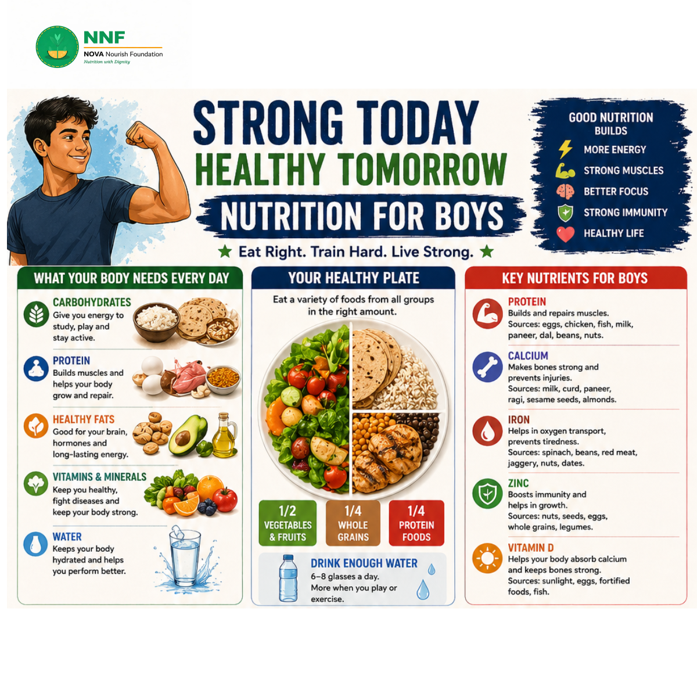

Why Nutrition Matters for Boys
Growing boys have high energy demands — from school, sports, and rapid physical development. Without the right nutrients, boys can experience fatigue, poor concentration, weak bones, and a compromised immune system. The good news is that eating well doesn't have to be complicated.
What Your Body Needs Every Day
A balanced diet for boys includes five core nutrient groups:
- Carbohydrates: The body's primary energy source. Opt for whole grains like brown rice, oats, and whole wheat roti over refined options.
- Protein: Essential for muscle building and repair. Include eggs, chicken, fish, dal, beans, milk, and nuts daily.
- Healthy Fats: Important for brain development and hormone production. Sources include avocado, nuts, seeds, and olive oil.
- Vitamins & Minerals: Found in fruits and vegetables. They support immunity, bone health, and organ function.
- Water: Drink 6–8 glasses daily. More is needed during physical activity.
Your Healthy Plate Model
Use the plate method to build every meal correctly:
The Healthy Plate
- ½ plate: Vegetables and fruits — the more colorful, the better.
- ¼ plate: Whole grains — brown rice, oats, millets, whole wheat roti.
- ¼ plate: Protein foods — eggs, chicken, fish, dal, beans, paneer.
Key Nutrients Boys Must Not Miss
Protein
Builds and repairs muscles. Sources: eggs, chicken, fish, milk, paneer, dal, beans, nuts. Aim for at least one protein source per meal.
Calcium
Makes bones and teeth strong and prevents injuries. Sources: milk, curd, paneer, ragi, sesame seeds, almonds. Teenage boys need 1,300 mg/day.
Iron
Carries oxygen in the blood and prevents tiredness. Sources: spinach, beans, red meat, jaggery, nuts, dates. Pair iron-rich foods with vitamin C for better absorption.
Zinc
Boosts immunity and supports growth and development. Sources: nuts, seeds, eggs, whole grains, legumes.
Vitamin D
Helps absorb calcium and keeps bones strong. Sources: sunlight (15–20 minutes daily), eggs, fortified foods, fatty fish.
Daily Healthy Habits
- Eat breakfast every day — never skip it. It fuels your brain and body for the day ahead.
- Choose home-cooked food over packaged options whenever possible.
- Stay active for at least 60 minutes every day — walk, play, cycle, or exercise.
- Sleep 7–9 hours every night. Sleep is when your muscles repair and grow.
- Carry a water bottle and stay hydrated throughout the day.
- Manage stress — relaxation is also part of good health.
What to Eat Before and After Sports
Pre-activity (1–2 hours before)
Banana + milk, or oats + nuts. These give you lasting energy without heaviness.
Post-activity (within 1 hour)
Milk + banana, or eggs + whole grain bread. Protein helps repair muscles; carbs restore energy.
Foods to Limit
- Too much junk food (chips, burgers, pizza)
- Sugary drinks (soda, energy drinks)
- Excess sugar and sweets
- Deep-fried and oily foods
- Too much salt
When to See a Doctor
If you notice any of these signs for a long time, consult a doctor or nutritionist: ongoing fatigue, poor appetite, frequent illness, unexplained weight changes, or any health/growth concerns.
"You don't have to be the best right now, but you can be better than yesterday. Eat well. Train hard. Stay focused. Be your best!"
— NOVA Nourish Foundation